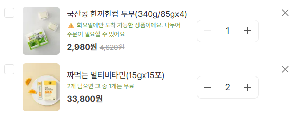

근거
1. 실제 적용 화면 — 주의상품 subtext + 프로모션 subtext 동시 확인

화요일에만 배송되는 두부 상품에 "⚠️ 화요일에만 도착 가능한 상품이에요. 나누어 주문이 필요할 수 있어요." subtext가 적용된 실제 화면입니다. 아래 짜먹는 멀티비타민에는 "2개 담으면 그 중 1개는 무료"라는 프로모션 subtext가 함께 보입니다 — 상품운영파트가 주의상품 패턴을 보고 프로모션 안내에도 동일하게 자체 적용한 결과입니다. 단일 제안이 사내 UI 기준으로 확산된 것을 한 화면에서 확인할 수 있습니다.
2. 기술 제약 기반 예외 처리 재정의 및 MVP 설계

모든 실패 조건을 세분화하는 방식 대신, API 응답값으로 실제 판단 가능한 조건만 남겨 구현 가능한 범위 안에서 예외 처리 구조를 재설계했습니다. 기술 제약을 전제로 한 실행 가능한 최소 단위(MVP) 해법으로 개발팀과 합의했습니다.